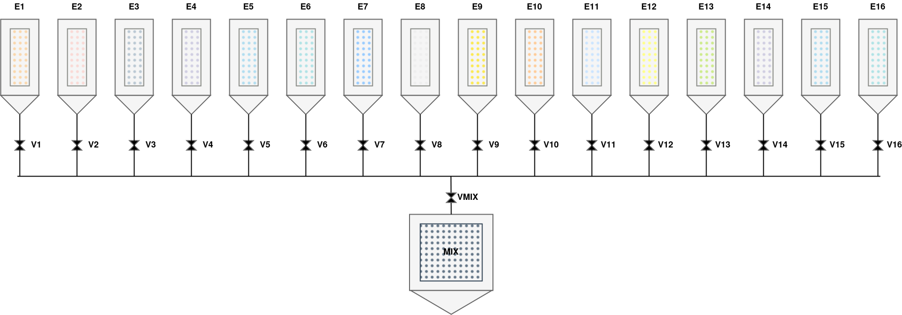

Challenge #341
Evil Plant
Bonjour,
D'après nos analyses couplées à nos relevés satellites, nous avons confirmation que la
cible,
sous couverture d'être une usine de production de vaccins, est en réalité une usine de
production
de liquide toxique utilisée à des fins militaires.
Les reconnaissances du réseau effectuées nous indiquent que la cible est contrôlée par
un automate
programmable industriel, lui-même communiquant via une interface SCADA par le protocole
OPC-UA en
mode binaire. Nous avons exposé la cible sur internet via un implant UMTS, celle-ci est
désormais
accessible sur le réseau :
localhost:4841
Un screenshot de l'interface SCADA à un temps indéterminé a également pu être
récupéré :

L'analyse des documents d'ingénierie récupérés a montré que la formule du liquide
toxique est composée de 16 éléments.
Nous ignorons les taux utilisés dans la formule ainsi que l'ordonnancement des
différents éléments :
nous faisons appel à vous pour les récupérer.
Il semblerait que les éléments soient ajoutés dans la cuve MIX (en bas du
screenshot) deux par deux,
mais pour pouvoir créer un remède efficace, nous avons besoin de savoir exactement dans
quel ordre et avec
quels taux les couples d'éléments sont mélangés.
Faites vite, le temps presse…
Note : Le numéro des éléments dans un couple d'éléments est à indiquer
dans l'ordre
croissant
(030c et pas 0c03 dans l'étape 2 de l'exemple ci-dessous), et
les taux
correspondants dans le même ordre.
Exemple : On donne un exemple du format du flag à soumettre. Supposons
que le
processus de fabrication comporte les trois étapes suivantes :
- Étape 1 : ajout de 27 unités (0x1b) de l'élément 1
(0x01) et de 47
unités (0x2f) de l'élément 8 (0x08) dans la cuve
MIX.
- Étape 2 : ajout de 95 unités (0x5f) de l'élément 12
(0x0c) et de 141
unités (0x8d) de l'élément 3 (0x03) dans la cuve
MIX.
- Étape 3 : ajout de 230 unités (0xe6) de l'élément 5
(0x05) et de 177
unités (0xb1) de l'élément 16 (0x10) dans la cuve
MIX.
Le flag à soumettre serait FCSC{01081b2f030c8d5f0510e6b1}, où toutes les
valeurs
sont exprimées en notation hexadécimale.
Fichier à étudier
- evil-plant.png